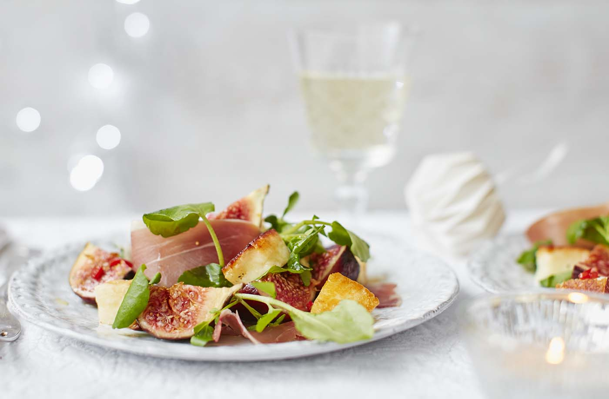
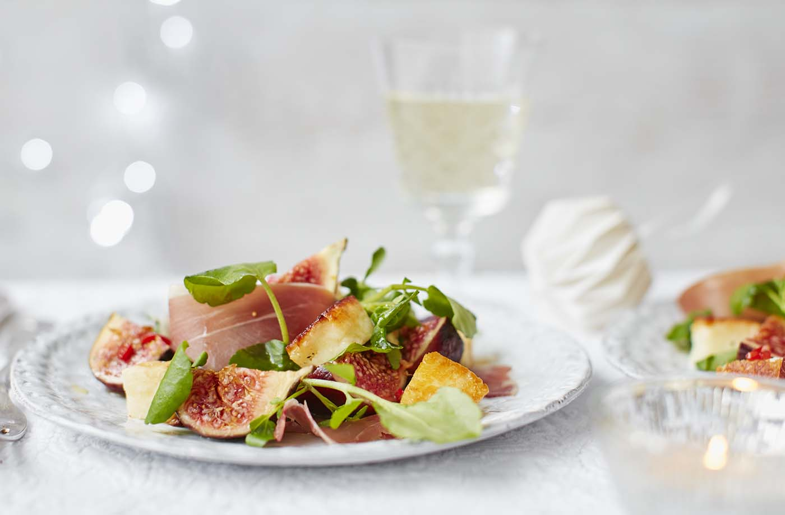

Main
Courses
Desserts
Drinks
Í 4. verkefni búum við til nýja forsíðu á uppskriftarvefinn og notum SVG tákn í lógó og leturtákn í efnisyfirliti. Til að byrja með notum við vefsíðurnar úr 3. verkefni sem undirsíður og höfum aðra tengla í efnisyfirlitinu óvirka.Með verklýsingunni fylgir SVG mynd með táknum sem þú getur notað í efnisyfirlitinu. Fyrst þarf taka táknin sem á að nota út úr skjalinu og búa til SVG mynd fyrir hvert tákn. Til framkvæma það þarftu að nota vector teikniforrit. InkScape hentar vel til verksins og hægt er að ná í það án endurgjalds
 
